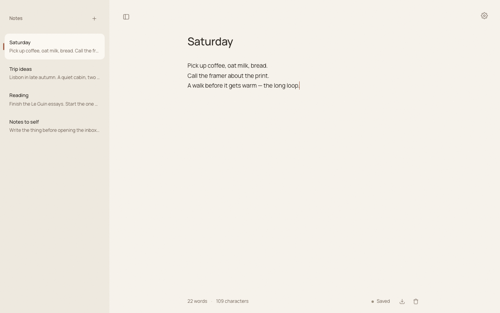

Notes, in the margin of every tab
Tabmargin is a minimal autosaving notepad. Take notes online from any device, make it your new tab with our extension, or sign up for Pro for cloud sync.
Free to use. Cross-device sync is an optional $3/mo upgrade.

One canvas, no toolbars.
Every keystroke is saved automatically.
Use the web app on all devices. Upgrade to keep them in sync.